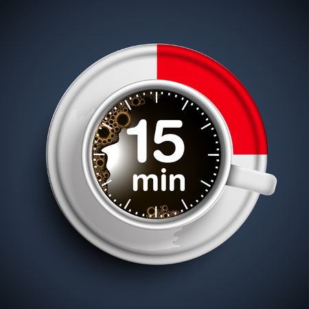

Conteudo do Material.

O benefício para ambas as partes quando se faz um intervalo de no mínimo 15 minutos
Você sabia que as pausas no trabalho aumentam a concentração e diminuem os níveis de nervosismo? Antes associados à procrastinação, esses intervalos são fundamentais para o bom rendimento no trabalho. Por isso, são cada vez mais comuns entre os profissionais de todos os setores.
Quais são os tipos de pausa no trabalho?
O intervalo intrajornada é realizado no horário de expediente. Obrigatório em qualquer trabalho contínuo que a duração exceda 6 horas, é destinado à alimentação e ao descanso. Deve ter, no mínimo, 1 hora e no máximo duas. Se a jornada for de 6 horas, o intervalo deve ser de, no mínimo, 15 minutos.
Já as pausas no trabalho não são regulamentadas por lei em todas as profissões. No entanto, os profissionais que realizam tarefas repetitivas ou ficam muito tempo na frente do computador devem pausar as atividades ao longo do dia para produzirem mais e reduzir os níveis de estresse pra melhorar a qualidade de vida
Obs. Quando for iniciar o trabalho, deixe água, café e algum petisco próximo, para evitar levantar toda hora e se distrair.